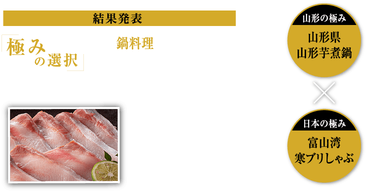
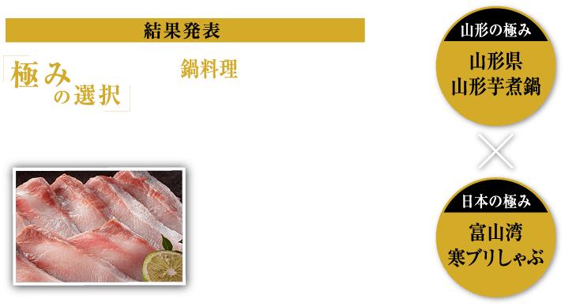
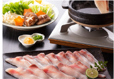
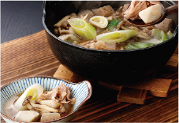

「極みの選択」冬の鍋料理対決は
「寒ブリしゃぶ」に軍配が上がりました！
- 富山湾 寒ブリしゃぶ
- 67%
- 山形県 山形芋煮鍋
- 33%
今回もたくさんのご応募、ありがとうございまました
プレゼント当選者の方には、
メールにてご連絡させていただきます
歴史ある魚問屋が選んだ
脂ののった寒ブリ

- 富山県の老舗魚問屋が良質な天然ブリを厳選
- 水揚げから急速冷凍まで、全て職人の手作業
- 「氷見寒ブリ」は厳しい基準をクリアしたトップブランド
氷見市で、70年以上の歴史を持つ〈松本魚問屋〉が、良質な天然ブリだけを選び、水揚げから急速冷凍まで全て職人の手で作りあげています。富山湾の「寒ブリ」の中でも「氷見寒ブリ」はトップブランドとされ、厳しい基準をクリアしたブリは、脂ののった満足の味です。
ホクホクおいしい
山形の郷土料理

- 山形の郷土料理をご自宅で気軽に堪能
- A4ランク以上の山形牛肩ロースのみを使用
- 食材はすべて、こだわりの山形県産
山形を代表する郷土料理、芋煮。内陸部では醤油ベースのスープに里芋のほかに牛肉を入れるのが一般的です。こちらのセットはA4ランク以上の山形牛肩ロースのみを使用し、無農薬有機栽培の里芋をはじめ、タレに至る迄すべての食材をこだわりの山形県産で揃えました。
【結果発表】
2020年12月24日
- ■投票の結果発表はリンベルのホームページ上で行います
- ■当選者にはメールでご連絡させていただきます
- ■当選されなかった方へのご連絡はいたしませんのでご了承ください
応募規約
本キャンペーンにご応募の際は以下の規約をお読みいただき、同意の上、ご応募ください。
■キャンペーン期間
・2020年12月3日（木）～ 12月16日（水）
■プレゼントについて
・ご応募の際にご投票いただいた商品をプレゼントいたします
■ご応募にあたって
・本キャンペーンに対する応募があったと認められる方の中から、抽選でプレゼントを提供いたします。
・当選された方には応募時にご登録いただいたメールアドレスにご連絡させていただきます。当選されなかった方へのご連絡はいたしませんのでご了承ください。
・当選された方はメールを受信後、記載された内容に従い、返信期限内にご連絡くださいますようお願いいたします。期限内にご連絡いただけない場合、当選の権利を無効とさせていただきます。
・当選時にご入力いただきました住所が不明、または連絡不能などの理由によりプレゼントがお届けできない場合は、当選権利を無効とさせていただきます。
・当選の権利はご本人のもので、第三者に譲渡・換金はできません。
・プレゼントの発送先は日本国内に限らせていただきます。
■個人情報の取扱について
・ご入力いただきました応募者の個人情報（住所・氏名・電話番号等）は、プレゼント発送業務及びそれに係る諸連絡の為に利用させていただきます。詳細につきましては「プライバシーポリシー」をご参照ください。
■お問い合わせ
・「お問い合わせ」よりお問い合わせください。